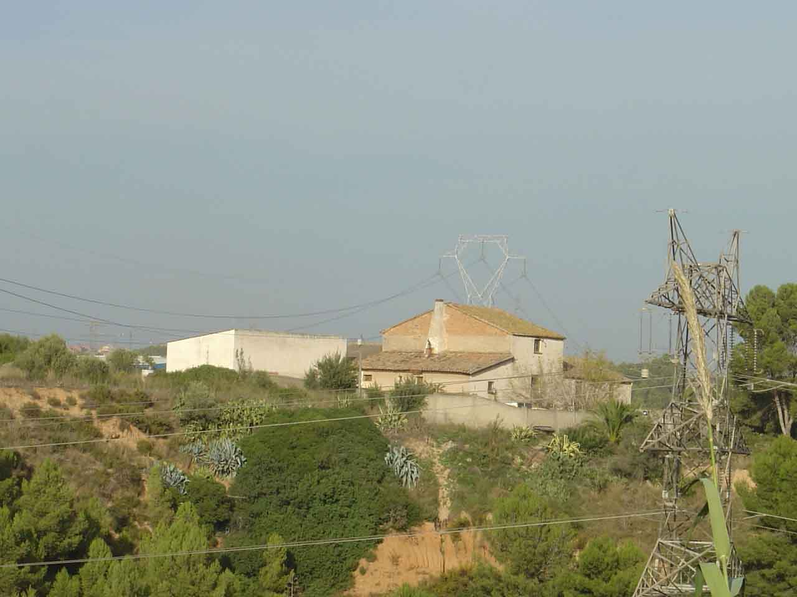
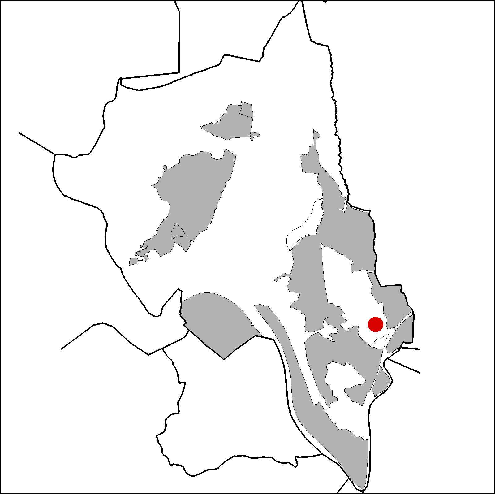

|  |  |
Nom de l’element: Can Galí
Clau d’identificació: B.1.15
Nucli o indret: Entre el Torrent de Can Cases i el Torrent de Can Galí.
UTM: X= 416.333, Y= 4.591.204, 93 m snm.
Referència cadastral: Polígon 5, parcel·la 9501 (08053A00509501)
Règim del sòl: Sòl no urbanitzable.
1.1. Època de construcció i tipologia:
Masia de l’any 1837. Presenta una gran entrada, d’arc adovellat, que distribueix les dependències de la cuina, els estables i els cellers. Al fons, una escala entre envans puja al pis de sobre, on una gran sala, corresponent a l’entrada, distribueix els dormitoris. Als finestrals hi ha festejadors. Els murs són de mamposteria i teula i la coberta, de fusta i teula. La masia té la planta quadrada. L’edificació no segueix la forma de la coberta tradicional i té un cobriment amb diferents vessants. A la part superior de la porta d’accés hi ha una pedra amb una inscripció de l’any 1837. Al 1940 la meitat de la coberta va ser reformada. Al 1960 es va reformar el terra de la planta pis i el de la planta sotacoberta. Té diversos cossos annexes, entre ells, dos magatzems , un cobert i un galliner.
1.2. Estat de conservació:
En general, mitjà. Tots els elements estructurals presenten un estat de conservació mitjà. Hi ha humitats.
1.3. Ús actual:
Habitatge i agrícola.
1.4. Accés:
Accés des del Camí de la Serra de Can Galí i des del camí que surt de Los Herreros.
Masia catalana del 1837 i una àmplia distribució interior.
3.1. Usos admesos:
Habitatge rural (màxim 3 habitatges); residencial; hoteler (excepte aparthotel; i amb un màxim de 30 places); oficines i serveis; indústria vinculada a productes del camp (industrial, categoria 1ª); educatiu; recreatiu cultural i social; recreatiu de restauració; esportiu
3.2. Condicions d’ordenació:
Segons Pla Especial a redactar.
3.3. Accés i serveis: Camí de la Serra de Can Galí.
BPU (Bé Protegit Urbanísticament)